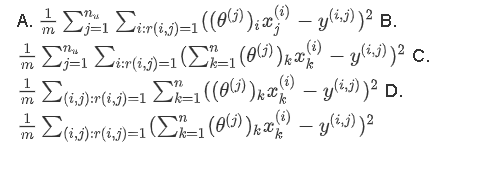

原题练习
先独立作答，再展开解析核对。计算题可以在纸上列式。
第 76 题
一家书店收集 1 至 5 星的评分。协同过滤为用户 j 学到向量 θ⁽ʲ⁾，为每本书 i 学到向量 x⁽ⁱ⁾。r(i,j)=1 表示用户 j 实际给书 i 打过分，y⁽ⁱ,ʲ⁾ 是该分数，m 是所有已评分位置的总数。nᵤ 是用户数，n 是向量维度。以下哪些写法正确给出已评分位置上的均方误差？

查看答案与解析
答案 B、D
先对每个已评分位置算预测值 pᵢⱼ=∑ₖθⱼₖxᵢₖ，再算 (pᵢⱼ−yᵢⱼ)²，最后除以已评分数量 m。B 按用户遍历，D 直接遍历已评分的 (i,j)，范围相同。A 使用了错误的特征索引形式，C 把各维误差先分别平方。
第 77 题
在下列哪种情况下，协同过滤系统是最合适的学习算法（与线性或逻辑回归相比）？
查看答案与解析
答案 A、D
A、D 都利用许多用户对许多物品的反馈推断相似物品或个人喜好。B 是由平均评分预测销量的回归；C 给每名顾客一个不同项目且只评一次，缺少判断相似偏好的交叉评分。
第 78 题
你经营着一个电影公司，想要建立一个基于协同过滤的电影推荐系统。有三个受欢迎的评论网站（我们称之为A、B和C），用户可以去给电影打分。你刚刚收购了三家经营这些网站的公司，希望将三个公司的数据集合并在一起，以构建一个单一/统一的系统。 在A网站上，用户将一部电影分为1到5颗星。在B网站上，用户的排名是1-10分，允许使用小数（如7.5）。在C网站，收视率从1到100。您还拥有足够的信息来识别一个网站上的用户/电影和另一个网站上的用户/电影。 以下哪个陈述是正确的？
查看答案与解析
答案 A
三个网站的同样数字含义不同，应先把各自评分映射到共同尺度。例如令 s′=(s−最低分)/(最高分−最低分)。之后对齐同一用户与电影；遗漏评分可以在协同过滤中跳过，故 C、D 不成立，B 的合并后统一缩放也不能先消除站点尺度差异。
第 79 题
以下哪项是协作过滤系统的正确选择？选出所有正确项
查看答案与解析
答案 A、C
A 只有一位用户且物品特征已知，目标是用这些特征做带 L2 惩罚的线性评分预测。C 可以预测未评分位置。B 中全部从 0 开始会使双方梯度都为 0；D 中特征向量可以从评分共同学出。
第 80 题
假设有两个矩阵A,B，其中A是5x₃，B是3x5。它们的乘积是C=AB，一个5x5矩阵。此外，还有一个5x5矩阵R，其中每个条目都是0或1。你想找到所有元素C(i,j)的和，对应的R(i,j)是1，忽略所有R(i,j)=0的元素C(i,j)。一种方法是使用以下代码： 下面哪一段代码也能正确计算出这个总数？选出所有正确项
下面哪一段代码也能正确计算出这个总数？选出所有正确项
查看答案与解析
答案 A、B
令 C=A·B。A 的 .* 逐元素乘，用二值掩码把不计入的位置变成 0，再求和；B 直接挑出 R=1 的位置求和。C 的普通矩阵乘法会混合元素，D 在乘法前以 5×5 掩码索引不同形状的矩阵。
题册勘误 原题 D 少右括号。排版时补齐，仍保留其原有的索引思路。